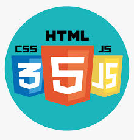

Cursos e Conhecimentos

Desenvolvimento front-end (HTML, CSS e JavaScript).
Alura
jun 2022 até o momento (143h)
- ⸰ HTML e CSS
- → HTML5 e CSS3 parte 1: crie uma página da Web (Jun 22);
- → HTML5 e CSS3 parte 2: posicionamento, listas e navegação (Jun 22);
- → HTML5 e CSS3 parte 3: trabalhando com formulários e tabelas (Jun 22);
- → HTML5 e CSS3 parte 4: avançando no CSS (Jul 22);
- → Acessibilidade web parte 1: tornando seu front-end inclusivo (Ago 22);
- → CSS: dispondo elementos com Flexbox e Grid (Set 22);
- → HTML e CSS: praticando HTML/CSS (Out 22);
- → HTML e CSS: responsividade com mobile-first (Out 22);
- → Arquitetura CSS: descomplicando os problemas(Out 22);
- → SEO: otimização de sites (Nov22);
- → Flexbox: posicione elementos na tela (Nov 22);
- → Layouts Responsivos: trabalhando com layouts mobile (Nov 22);
- → CSS Grid: simplificando layouts (Nov 22);
- ⸰ JavaScript
- → JavaScript para Web: Crie páginas dinâmicas (Dez 22);
- → JavaScript: manipulando o DOM (Jan 23);
- → JavaScript na Web: armazenando dados no navegador (Jan 23);
- → JavaScript na Web: validação de Formulários e HTML5 (Fev 23);
- → JavaScript: consumindo e tratando dados de uma API (Fev 23);

Git e Github
Alura
mai de 2022 (12h)
⸰ Git e Github: controle e compartilhe seu código
⸰ Git e Github: estratégias de ramificação, Conflitos e Pull Requests

Linux
Alura
mar de 2022 (12h)
⸰ Linux I: conhecendo e utilizando o terminal
⸰ Linux II: programas, processos e pacotes

Desenvolvimento Back-end (PHP, Laravel e Lumen)
Alura
jan de 2020 - ago de 2020 (64h)
- ⸰ Formação PHP
- → PHP: conceitos, lidando com dados, loops e mais
- → Avançando com PHP: Arrays, Strings, Função e Web
- → Orientação a Objetos com PHP: Classes, métodos e atributos
- → Avançando com Orientação a Objetos com PHP: Herança, Polimorfismo e Interfaces
- ⸰ Formação Laravel
- → Laravel: criando uma aplicação com MVC
- → Laravel: validando formulários, usando sessões e definindo relacionamentos
- → Laravel: transações, service container e autenticaçãos
- → Laravel: e-mails, eventos assíncronos, uploads e testes

Lógica de programação
Alura
ago de 2019 (10h)
⸰ Lógica de programação: comece em lógica com Javascript
⸰ Lógica de programação: laços e listas com Javascript
SQL e Banco de Dados Relacionais
Alura
mar de 2017 - ago de 2017 (24h)
⸰ SQL Server: Introdução ao SQL
⸰ SQL Server: consultas avançadas com Microsoft SQL Server.

Fundamentos do Scrum
TI.exames
2013 (4h)
Fundamentos básicos do Scrum.